November Papers: An LLM Feast
This month we've got an all-LLM menu of papers for you, with summaries of four great works exploring many different aspects of crafting systems for LLM training and inference.
We start with the surprising result that removing a single weight out of billions can completely ruin a model's ability to generate coherent text. Dubbed "super weights", preserving these weights is essential when quantising models to lower precision.
Also, we discuss how researchers at Meta explored using context parallelism, where the hidden states of the tokens are split across multiple processors and attention is computed using collective operations. They experiment with multiple strategies and find that different strategies should be used during different phases of inference.
Next, we cover an extension of scaling laws to account for numerical precision. The authors find, among other things, that neither 16-bit precision (as in current practice) nor very narrow bit widths (e.g. 4-bit precision) seem to be optimal.
Finally, we have a paper about the critical batch size in LLM training, the point at which increasing the global batch size is no longer helpful. The authors investigate how this value scales with the size of the model and the amount of training data, finding that the amount of training data has a much bigger effect.
We hope you enjoy these month's papers as much as we did! If you have thoughts or questions, please reach out to us at @GCResearchTeam.
We hope you enjoy this month's papers as much as we did! If you have thoughts or questions, please reach out to us at @GCResearchTeam.
The Super Weight in Large Language Models
The key idea
In an LLM, a small number of MLP down projection weights appear to be critical for enabling the construction of complete sentences. These weights suppress the probabilities of generating "stopwords" (e.g., the, and, .). Quarantining and preserving these weights drastically improves data-free round-to-nearest quantisation.
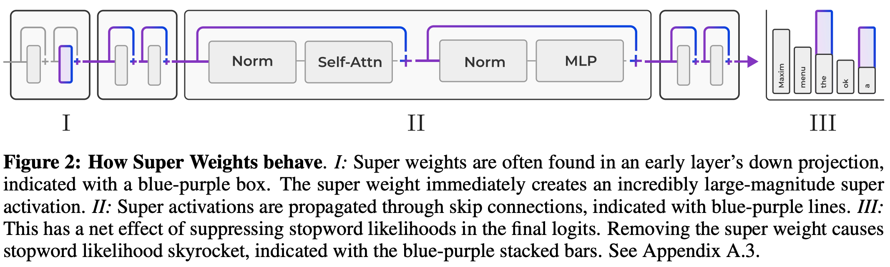
Their method
The authors start by asking the question of how "massive activations" as observed by Sun et al. (2024) (see our summary in a previous month) are created. These massive activations appear independent of token position in every layer, and appear regardless of input prompt.
The authors demonstrate that these activations appear to be created by (in most cases) a multiplication of a single element in each of the weight matrix and the preceding activation that dominates the dot product. That is, for a massive activation \(Y_{ij}\) we have
\(Y_{ij} = \sum_k X_{ik}W_{jk} \approx X_{im}W_{jm}\)
where the forward pass of the feed-forward layer is calculated as \(Y = XW^T\).
These super weights are not always the largest by magnitude in the weight matrix. The authors demonstrate that super weights can be found simply by feeding in an arbitrary prompt, locating the massive activation in the output, then iteratively pruning weights until the massive activation is diminished. In most cases, only a single weight needs to be removed.
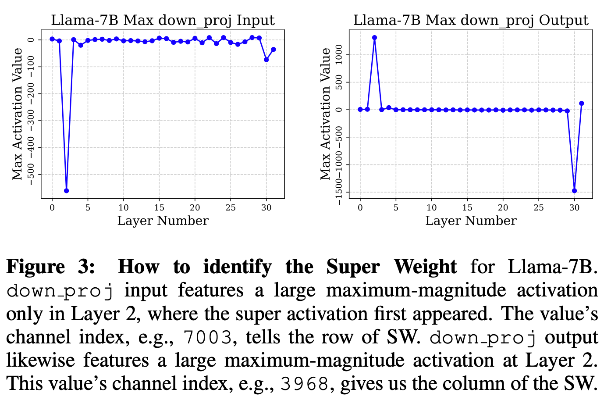
The authors provide a super useful table so that you can go and look up these super weights for yourself for a range of open models.
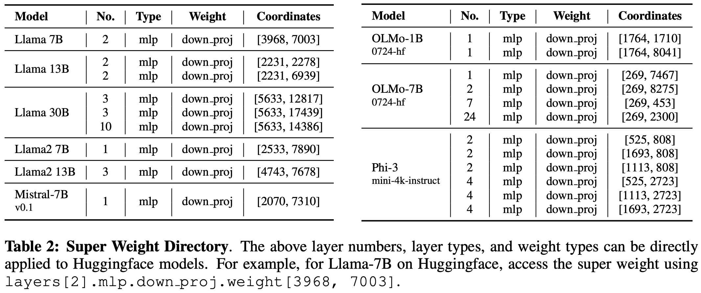
Results
The most striking result is that individual weights can be critical for an LLM to be able to generate coherent sentences. In the open LLMs that the authors tested, removing these super weights often reduced QA task performance to near chance level and severely impacted language model perplexity.
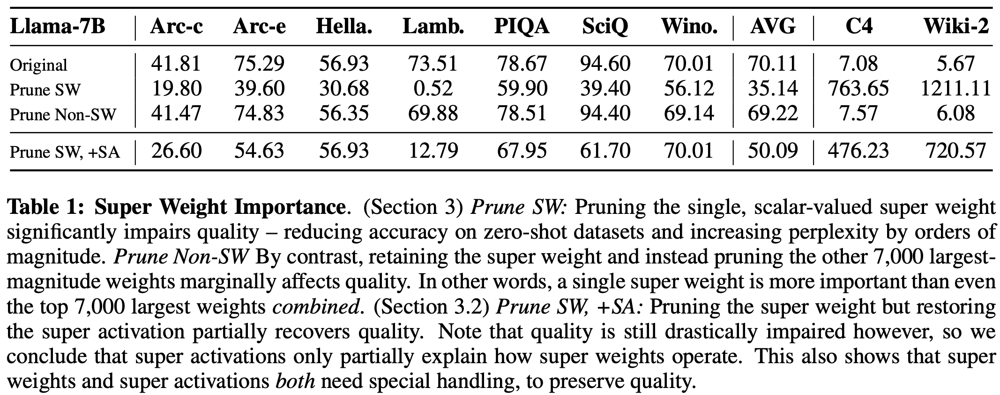
They conduct a series of ablations to try to understand the effect of removing super weights. They demonstrate that:
- Restoring super activations despite pruning super weights recovers some loss of performance but not all, indicating that super weights have other unknown effects on performance via contributions to other activations.
- Examining output token probability averaged over 500 input prompts demonstrates that stopword probability is drastically increased after super weight removal. Sadly, the authors don't fully unpick this phenomenon.
- Increasing the super weight's magnitude by a factor of 1-2x can usually improve model performance on downstream tasks. Performance worsens outside this range.
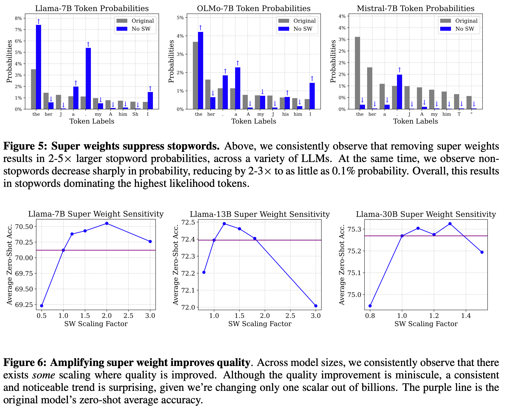
Finally, the authors offer a simple quantisation strategy for preserving super weights and minimising precision loss of regular weights. They use a simple clipping strategy (which requires tuning a hyperparameter) to reduce the effective range for round-to-nearest quantisation, then restore super weights post-quantisation.
The authors compare this to naive quantisation, where they find a big improvement, and block quantisation, where they find an improvement for larger block sizes. This makes it useful as a cheap and easy strategy before trying out methods that require data for post-training quantisation.
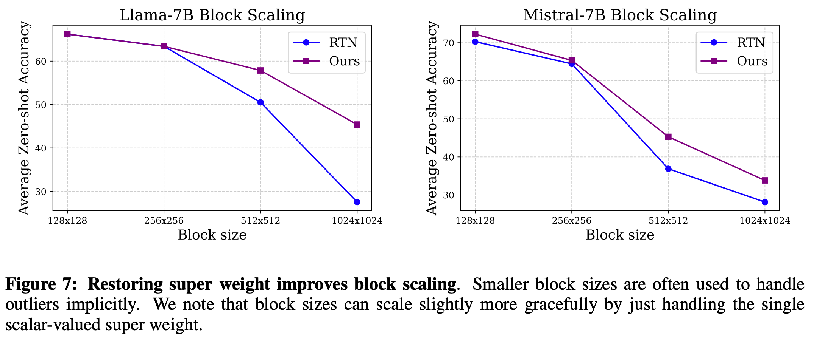
Takeaways
The numerics underlying LLM performance are still something of a mystery. There are many unexplained phenomena, some of which we just try to deal with for a fixed LLM (as in this paper) and some of which we try to deal with for future pretrained LLMs, e.g., by creating attention bias terms or stabilising Gated Linear Units. While the authors don't attempt to uncover deep reasons why this might be a useful feature of LLMs that we should capture in a more numerically stable way, the results are striking and the solutions are cheap.
Context Parallelism for Scalable Million-Token Inference
The key idea
One area where modern LLMs must compete is their ability to handle increasingly long context lengths. Longer context lengths allow the models to handle larger inputs and, in inference, give the user a better experience (with, for example, multi-turn conversations), but can put a strain on both compute and memory capacity.
In this paper the authors focus on the use of context parallelism and of adaptive algorithms for optimisation to improve latency and scalability performance when serving LLM inference with context lengths of up to a million tokens.
Context parallelism proves beneficial for reducing latency in multi-node inference with respect to other parallelism strategies as it involves less communication traffic than e.g. tensor parallelism. On the other hand, the main intuition behind adaptively switching between different variations of the ring attention heuristic is that inference presents different KV cache hit rates according to user behaviour and the phase of the serving process. This variability can be exploited to optimise performance for each stage of inference.
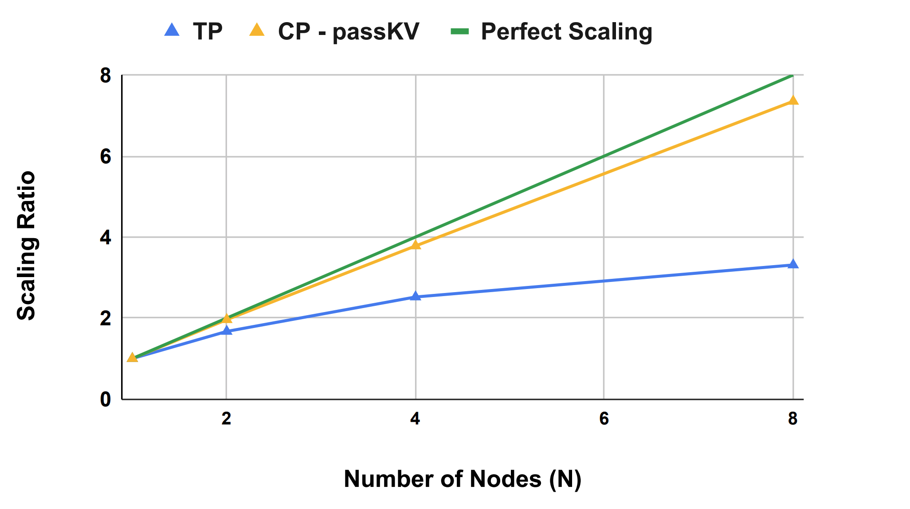
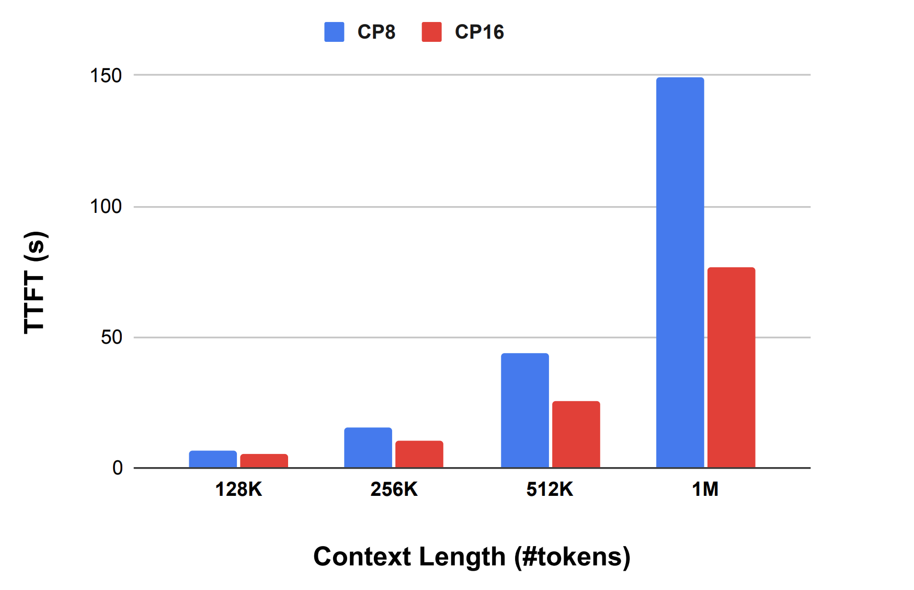
Background
Serving LLMs with longer context lengths uses more memory. In particular, the size of the Key and Value (KV) cache increases linearly with context length. If the memory required exceeds that of a single processor, it must either be split across multiple processors or quantised to a lower precision number format. This paper focuses on the Context Parallelism (CP) paradigm which splits the inputs and all activations along the sequence dimension. Then the processors exchange QKV tensors to compute attention.
This paper builds on Ring Attention, a technique devised by researchers at UC Berkeley: the main idea is to perform a block-wise computation of self-attention and feedforward to distribute the long context length across multiple devices while fully overlapping the communication of KV blocks with the computation of attention.
Their method
The authors consider two ring attention variants: pass-KV, where the KV tensors are exchanged between processors, and pass-Q, where the Q tensors are exchanged between processors. During the different phases of the inference process, different variants are used to minimise the communication costs. There are three phases to consider:
- Full prefill, where the entire prompt is processed. No prior KV cache is present, so passing the full KV tensors here makes sense, and communication can be reliably overlapped with computation.
- Partial prefill, where the user provides a follow-up prompt. Heuristics guide whether to use pass-KV or pass-Q dynamically, depending on the cache hit rate and the relative size of the new and cached tokens.
- Decode, where the model processes and generates one token at a time auto-regressively. In this case communicating the Q tensors incurs a smaller communication overhead.
In addition, the authors fix Tensor Parallel (TP) to (typically) 8 processors, then pair it with CP to scale out to more nodes. CP has less communication traffic than TP: LLMs have more linear layers than attention layers and CP might communicate KV tensors instead of Q tensors, which leads to less communication in models which use Grouped Query Attention (GQA). Hence CP improves latency for multi-node inference.
Results
The authors benchmark their heuristics on H100 GPUs (up to 128 GPUs: 16 nodes of H100s, 8xGPUs in each node). CP is applied over the 1-16 nodes and test all three phases of inference (full prefill, partial prefill and decode). Within each node the model is partitioned with TP8 over 8 GPUs. They use the Llama 3 405B model with weights quantised to FP8.
The most promising results, as illustrated in Figure 1a and 1b above, are that:
- For the full prefill phase with long enough context length they obtain a reduction in the latency proportional to the number of CP nodes (so latency is halved when the number of CP nodes is doubled). This result was compared with TP performance, which is performs less well as it consumes more compute resources: the latency difference between CP2 and TP16 increases from 15% on 2 nodes to 100% on 8 nodes. (see Figure 1b)
- In another prefill experiment the context length is increased up to 1M (see Figure 1a) and they achieve 77s latency for this length, compared to 3.8s for 128k.
They obtain their best results for the prefill phase, which is the inference phase that benefits the most from the adopted CP recipe.
Scaling Laws for Precision
The key idea
Current scaling laws describe how models perform in terms of their size and the amount of data used to train them. This paper goes further by incorporating the effects of reduced precision on training and inference in language models, allowing practitioners to better balance performance and computational efficiency. While reduced precision can lower costs, it risks degrading model quality. The authors focus on two scenarios: (1) low-precision training, where weights, activations, and attention are quantised, and (2) post-training quantisation, where only weights are typically quantised for inference.
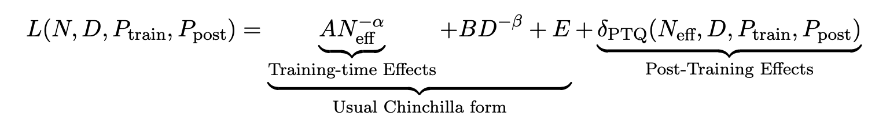
Their method
To establish these scaling laws, the authors conducted over 465 pretraining runs and fit a scaling law on those runs conducted in integer precision. They compare the resulting predictions to empirical results for floating-point precision, and find them to be a good fit. Fitting a scaling law on runs conducted in floating-point precision would require fitting on both the number of mantissa and exponent bits, which the authors leave to future work.
Results
There are two main findings in this paper:
- Optimal precision balance: The optimal precision for training lies around 7-8 bits, challenging both current practices of 16-bit training as well as the push toward ultra-low precision formats like FP4. More generally, training larger models in lower precision can be compute-optimal.
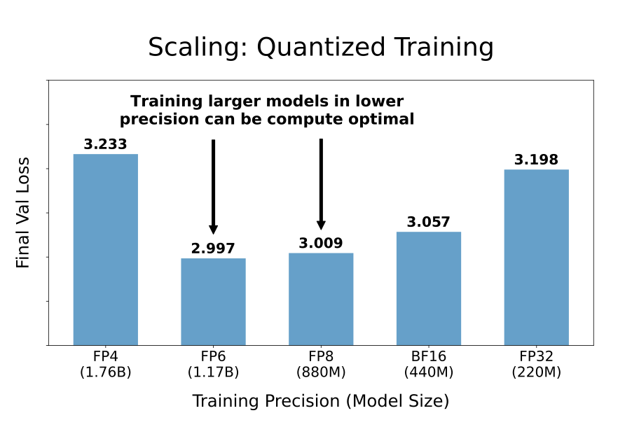
- Post-training quantisation risks for overtrained models: More pretraining data makes models increasingly sensitive to post-training quantisation.
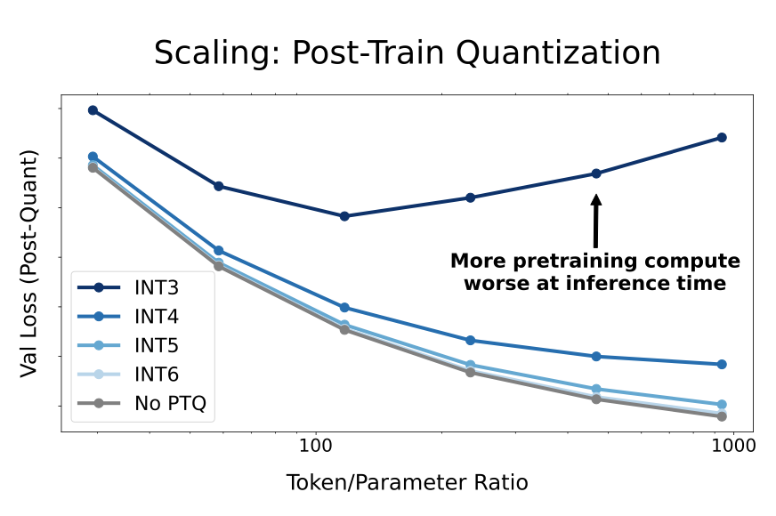
Takeaways
This paper invites further empirical validation to confirm these laws under broader setups. Additionally, new formats like micro-exponent floating-point (MXFP) or NormalFloat are not covered. Lastly, the experimentation only considers language modelling loss and not downstream evaluation results.
In conclusion, this study offers strong guidelines for optimising model precision across training and inference. However, there is still work to be done to extend their work to all possible floating-point types.
How Does Critical Batch Size Scale in Pre-training?
The key idea
The critical batch size (CBS) is the largest batch size at which an LLM can be trained without requiring more data to reach the same loss. The key contribution in this paper is an analysis of how CBS scales with respect to data and model size in a modern training setup. They find a key and perhaps surprising result: CBS is largely determined by the amount of training data, and is almost invariant to model size.
Background
Each step of the standard ML training procedure has two phases: the accumulation of gradients, and the update of parameters based on those gradients. Accumulation takes place in three places: within a local mini-batch on each device, across devices (using a data parallel all-reduce operation), and across sequential mini-batches (i.e. gradient accumulation).
For the sake of computational efficiency, we wish to use large local mini-batches to ameliorate the cost of loading weights, and as many data parallel devices as we have available to maximise compute. This means we want to use a large global batch size. When the global batch size is lower than the CBS it makes no difference to the final loss how large or small the batch size is (i.e. how much we accumulate before we update the parameters) - we always reach the same loss with the same amount of data. Another way to view this is to say that below the CBS, a doubling of the batch size halves the number of updates required - hence the term "linear scaling".
The CBS is the point at which linear scaling ceases to hold. This concept was first introduced in a 2018 paper on large-batch training by OpenAI, which shows that gradient noise can be used to predict the critical batch size. However, that paper and its successors have not shown how the CBS relates to model size and number of tokens trained on, particularly in the context of LLM training. Understanding this is the purpose of this paper.
Their method
The authors define the CBS as the batch size at which >=20% more steps are needed to reach the target loss than would be predicted were the linear scaling at small batch sizes to continue (see the paper for a mathematical formulation of this statement). This is an arbitrary threshold, but the line has to be drawn somewhere.
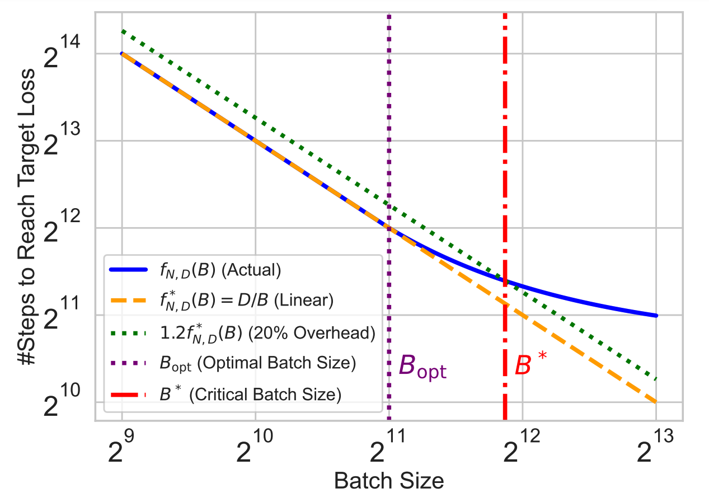
=20%." class="constrained_img_large">Instead of setting a target number of tokens and looking at the degradation in loss as batch size increases, they instead choose to set a target loss and look at the increase in steps required to reach it. This seems sensible, as it is a more interpretable metric than the increase in loss, but it does make some things harder. For instance, they have to use a slightly non-standard (though well-validated) loss schedule for which the number of steps does not need to be known ahead of time.
Results
They then train three sets of models, where each set contains models trained with a range of batch sizes and total compute allocations. The sets differ in how this scaled-up compute is allocated between increased model size and increased token count. The three procedures are:
- Allocate using the compute-optimal ratio between the two, as determined by the Chinchilla paper
- Fix the model size and only increase token count
- Fix the token count and only increase model size
They then use this to fit scaling laws for the number of steps taken as a function of the batch size. This results in the following:
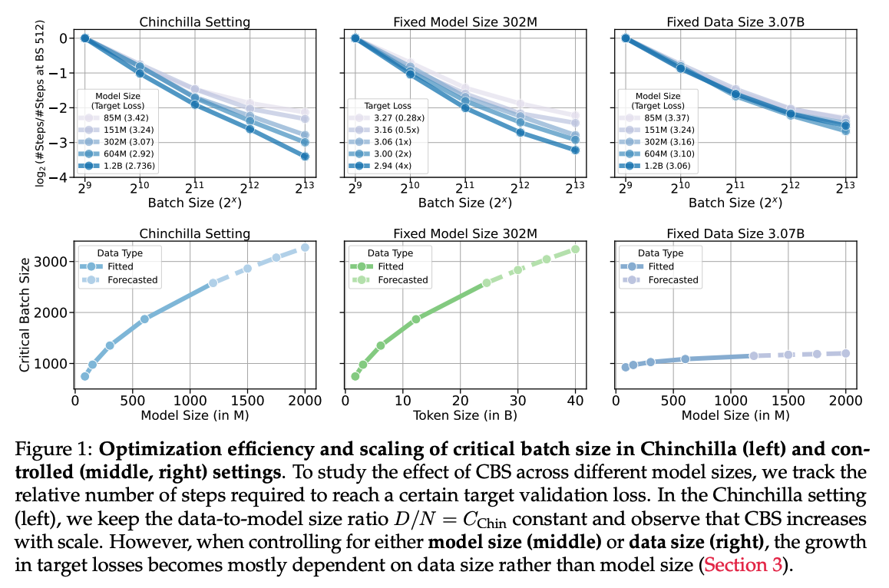
The scaling laws are used to compute the forecasts in the bottom row. The most interesting feature of these plots is the shape of the bottom right curve, showing that the CBS depends little on model size. Their scaling law says the the critical batch size $B^* $ relates to the model size \(N\) as \(B^* \propto N^{0.087}\) - so a \(100 \times\) increase in parameters would entail an increase of only \(100^{0.087} \approx 1.5\times\) in the CBS!
Takeaways
This is a very useful paper, with a nice clear central result (something like: "only worry about scaling batch size with model size (alone) if you have a ~100-1000x increase in parameters"). It's made more robust by the careful control of hyperparameters (e.g. using µP to scale the learning rate). Practitioners will be able to use this analysis to determine their own critical batch size for large training runs.
The only thing really lacking is a good intuition for why longer training runs should have a larger CBS. One possibility here is that later in training larger batch sizes are more helpful, as the model improves and more data is required to derive an effective update (i.e. the loss landscape is harder to descend). This opens up the question of whether the CBS increases during training (which may well explain their finding), and if so how might one set a batch size schedule. We look forward to seeing future papers investigate this question!